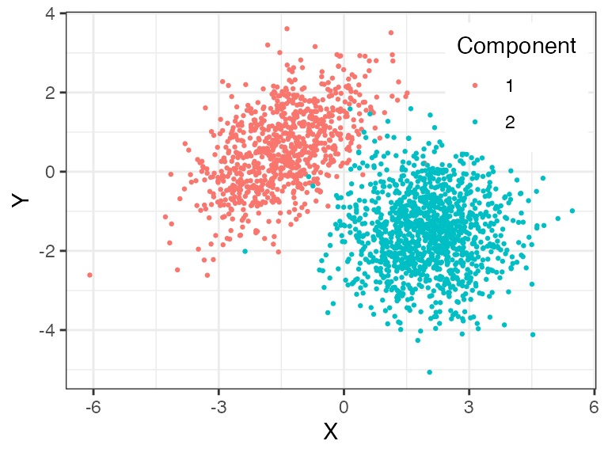
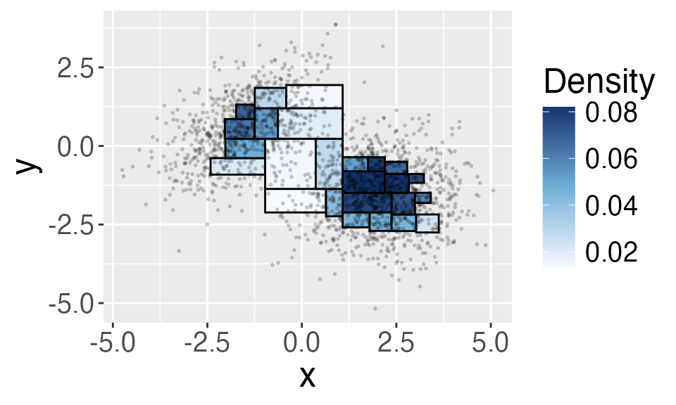
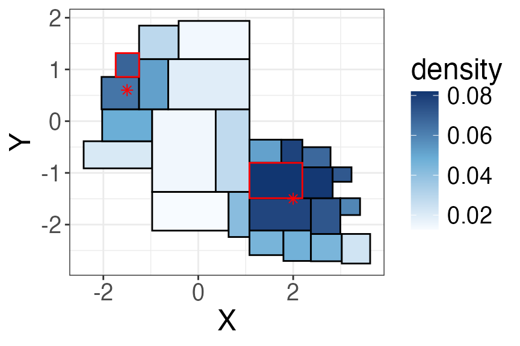
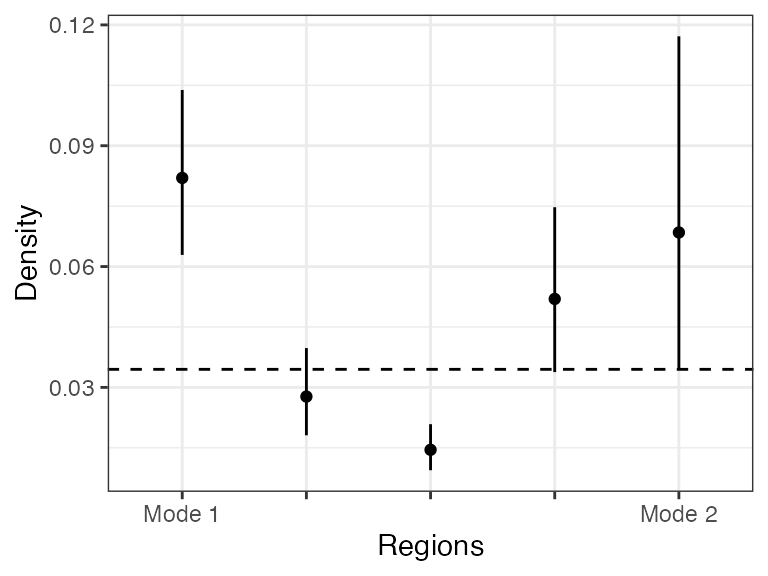

Mode Hunting Using Beta-Trees
mode.RmdIn this vignette, we will demonstrate how to use a Beta-tree histogram to identify modes in a continuous probability distribution.
The mode of a continuous probability distribution is a local maxima of the probability density. For example, the following plot shows the density contours of a mixture of 2-dim Gaussian and the asterisks indicate the two modes of the density function. We are often interested to identify modes in a distribution because they indicate sub-populations (here, the two modes indicate the two mixture components).
## Warning: Using `size` aesthetic for lines was deprecated in ggplot2 3.4.0.
## ℹ Please use `linewidth` instead.
## This warning is displayed once every 8 hours.
## Call `lifecycle::last_lifecycle_warnings()` to see where this warning was
## generated.
For a histogram, we can think of a mode as a region whose average density is higher compared to its neighbors. Put in a different way, suppose two regions and are distinct modes, then along any path connecting and there exists at least one region whose average density is lower than those of both and .
Example: Detecting modes in a mixture of 2-dim Gaussian
In this example, we simulate 2000 obs. from a 2-dim Gaussian mixture we showed before
We will start by creating a Beta-tree histogram. Here, we set the
confidence level alpha = 0.1 and we use the weighted
Bonferroni method for multiple testing correction. The densities are
higher in the upper left and the lower right regions, suggesting there
are two modes in the distribution.
hist <- BuildHist(X, alpha = 0.1, method = "weighted_bonferroni", plot= T)
We use the FindModes() function to identify modes in a
Beta-tree histogram. This function has three parameters, the first is
the Beta-tree histogram (output of the BuildHist function),
the second is the data dimension d, and the third is the
cutoff value of the path length (we only check paths whose length is at
most cutoff). We set cutoff=1000 here, which
means we will look at every path between two regions. However, it might
be infeasible to check every path because of computational restraint, so
typically we would set a smaller cutoff, e.g.,
cutoff = 6.
modes <- FindModes(hist = hist, d = d, cutoff = 1000)The FindModes function returns a list with three
components: mode returns the index of the modes,
hist returns the input histogram, and g
returns the adjacency graph of regions in the histogram.
modes$mode # which regions are the modes?## [1] 20 8
hist[modes$mode, 1:4] # lower and upper bounds of the two modes## [,1] [,2] [,3] [,4]
## [1,] 1.079403 -1.4891923 2.193951 -0.8053697
## [2,] -1.738694 0.8557582 -1.246862 1.3160574We highlight the two modes in the histogram, and the asterisks are the two true modes. The two modes in the Beta-tree histogram are close to the actual modes in the distribution.

In the next section, we describe details of the
FindModes function.
Identifying modes of a Beta-tree histogram
Let’s rephrase the question of mode detection as the following: how can we tell that the two regions highlighted in red (let’s call them and ) are two distinct modes? (If we know how to do this, then we can detect modes by iterating through all the regions , compare each one with the current list of distinct modes, and declare it a mode if it is distinct from all the current modes.) Suppose that and are distinct modes, then along every path that connects and , there should exist at least one region whose average density is lower than those of both and . Because the Beta-tree histogram returns a CI for the average density, we compare the lower and upper bound of the CI, that is, there should exist a region such that
where is the confidence interval of the average density of .
For example, we plot the confidence intervals for every region along the shortest path and . As we can see, the upper confidence bound of the third region is below the lower endpoints of both modes. Suppose this is true for every path, then we declare and are two distinct modes.

Note that we have only examined one path here, and to check every
path, we use the function is_connected(). It returns
connected if the two regions are not
distinct modes. The function has five input values: i and
j are the indices of the two regions, g is a
graph based on the adjacency matrix (we will describe later),
ci are the lower and upper confidence bounds, and
cutoff specifies the maximum length of path the function
checks.
is_connected(i = modes$mode[1], j = modes$mode[2], g = g, ci = hist[,6:7], cutoff = 6)## [1] "unconnected"We need the adjacency matrix in order to compute the path between two
regions. The function compute_adjacency_mat() computes the
adjacency matrix for all of the regions in the histogram. The two inputs
of the function is a Beta-tree histogram hist and data
dimension d. In the output adjacency matrix
,
if
-th
and
-th
regions are neighbors and 0 otherwise. We say that
and
are neighbors if
Here, we represent each region by the
lower and upper bound in each coordinate, i.e.,
can be represented as
.
adj <- compute_adjacency_mat(hist = hist, d = d)
adj[1:5, 1:5] ## [,1] [,2] [,3] [,4] [,5]
## [1,] 0 1 0 0 1
## [2,] 1 0 0 0 1
## [3,] 0 0 0 1 1
## [4,] 0 0 1 0 0
## [5,] 1 1 1 0 0From the adjacency matrix, we compute an undirected graph
g (using the function
graph_from_adjacency_matrix from the igraph
package).
g <- igraph::graph_from_adjacency_matrix(adj, mode = "undirected")To summarize, FindModes proceeds in the following
steps:
Order regions by the empirical density (in descending order). Initiate the list of modes by the region with the highest density.
Iterate through every region by the order given in (1), test if it is a distinct mode from the current list of modes using
is_connectedfunction. If it isunconnectedfrom all the current modes, then we add it to the list of modes.Return the list of modes.